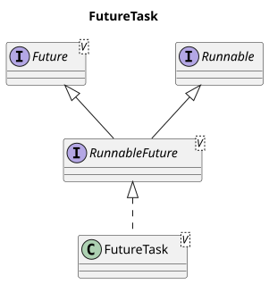

友情支持
如果您觉得这个笔记对您有所帮助，看在D瓜哥码这么多字的辛苦上，请友情支持一下，D瓜哥感激不尽，😜
|
|


有些打赏的朋友希望可以加个好友，欢迎关注D 瓜哥的微信公众号，这样就可以通过公众号的回复直接给我发信息。

公众号的微信号是: jikerizhi。因为众所周知的原因，有时图片加载不出来。 如果图片加载不出来可以直接通过搜索微信号来查找我的公众号。 |
56. FutureTask
56.1. 类图
先来看一下 ArrayList 的类图：

实现了 Runnable 的 run()，在方法结束时，获取返回值。
V get() 方法之所以能阻塞直到方法执行，拿到结果，是因为在 get() 方法通过 awaitDone(boolean timed, long nanos) 执行了一个无限循环。在循环过程中，不断获取任务执行的状态，进一步获取结果或者响应中断请求。
1
2
3
4
5
6
7
8
9
10
11
12
13
14
15
16
17
18
19
20
21
22
23
24
25
26
27
28
29
30
31
32
33
34
35
36
37
38
39
40
41
42
43
44
45
46
47
48
49
50
51
52
53
54
55
56
57
58
59
60
61
62
63
64
65
66
67
68
69
70
71
72
73
74
/**
* @throws CancellationException {@inheritDoc}
*/
public V get() throws InterruptedException, ExecutionException {
int s = state;
if (s <= COMPLETING)
s = awaitDone(false, 0L);
return report(s);
}
/**
* Awaits completion or aborts on interrupt or timeout.
*
* @param timed true if use timed waits
* @param nanos time to wait, if timed
* @return state upon completion or at timeout
*/
private int awaitDone(boolean timed, long nanos)
throws InterruptedException {
// The code below is very delicate, to achieve these goals:
// - call nanoTime exactly once for each call to park
// - if nanos <= 0L, return promptly without allocation or nanoTime
// - if nanos == Long.MIN_VALUE, don't underflow
// - if nanos == Long.MAX_VALUE, and nanoTime is non-monotonic
// and we suffer a spurious wakeup, we will do no worse than
// to park-spin for a while
long startTime = 0L; // Special value 0L means not yet parked
WaitNode q = null;
boolean queued = false;
for (;;) {
int s = state;
if (s > COMPLETING) {
if (q != null)
q.thread = null;
return s;
}
else if (s == COMPLETING)
// We may have already promised (via isDone) that we are done
// so never return empty-handed or throw InterruptedException
Thread.yield();
else if (Thread.interrupted()) {
removeWaiter(q);
throw new InterruptedException();
}
else if (q == null) {
if (timed && nanos <= 0L)
return s;
q = new WaitNode();
}
else if (!queued)
queued = WAITERS.weakCompareAndSet(this, q.next = waiters, q);
else if (timed) {
final long parkNanos;
if (startTime == 0L) { // first time
startTime = System.nanoTime();
if (startTime == 0L)
startTime = 1L;
parkNanos = nanos;
} else {
long elapsed = System.nanoTime() - startTime;
if (elapsed >= nanos) {
removeWaiter(q);
return state;
}
parkNanos = nanos - elapsed;
}
// nanoTime may be slow; recheck before parking
if (state < COMPLETING)
LockSupport.parkNanos(this, parkNanos);
}
else
LockSupport.park(this);
}
}